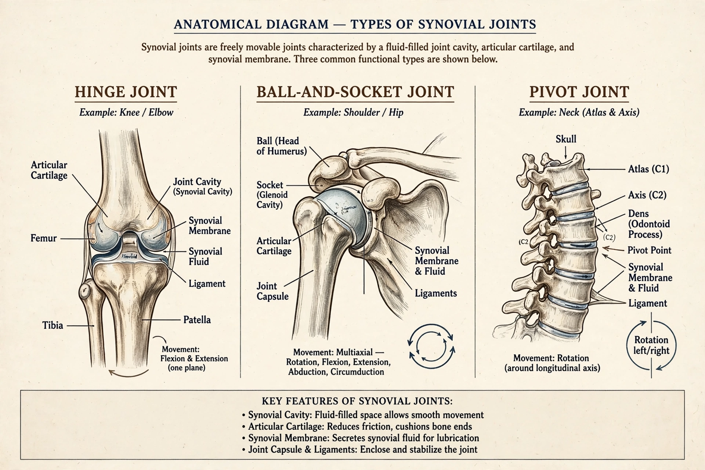

| Joint | |
|---|---|
 | |
| System | Musculoskeletal |
| Latin | articulatio |
A joint or articulation is the connection made between bones, ossicles, or other hard structures in the body which link the skeletal system into a functional whole. Joints are constructed to allow for different degrees and types of movement.
Fibrous joints are held by dense connective tissue and mostly immovable (e.g. skull sutures). Cartilaginous joints are united by cartilage (e.g. intervertebral discs, pubic symphysis). Synovial joints — the most common and mobile — have a synovial cavity, a joint capsule, and a synovial membrane; examples include the hip, shoulder, elbow, and wrist. Synovial joints are further classified as hinge, pivot, ball-and-socket, saddle, condyloid, and plane.
Synarthroses (immovable), amphiarthroses (slightly movable), and diarthroses (freely movable).
Joint diseases (arthropathies) include osteoarthritis, rheumatoid arthritis, and gout. The medical specialty concerned with joints is rheumatology; arthroscopy allows direct inspection.